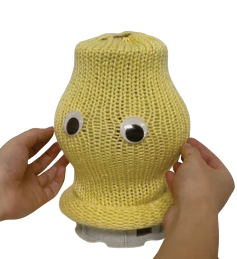
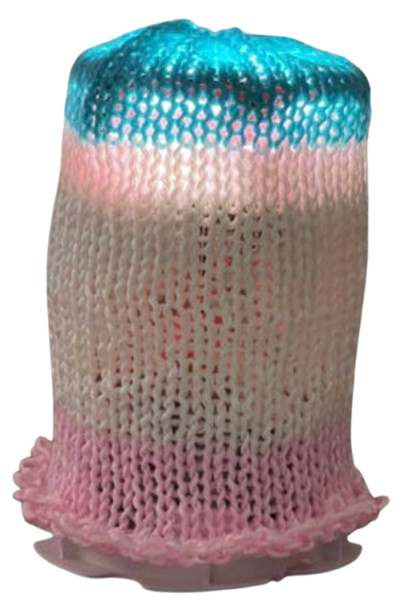
Lantern
ACM/IEEE HRI ’26 Sustainability Demonstration Recognition
A minimalist robotic object platform for building simple robotic artifacts, at a build cost of about $40.
HRI ’26ProjectBuild guidePaper
Robots, platforms, and systems from my research. Lantern, M, and the plant-inspired prototypes are open source.


ACM/IEEE HRI ’26 Sustainability Demonstration Recognition
A minimalist robotic object platform for building simple robotic artifacts, at a build cost of about $40.
HRI ’26ProjectBuild guidePaper
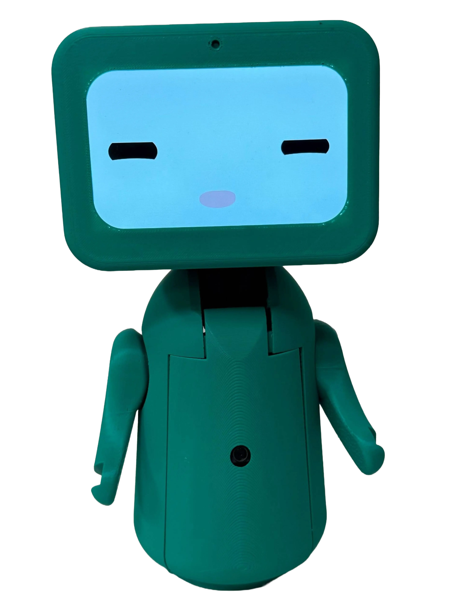
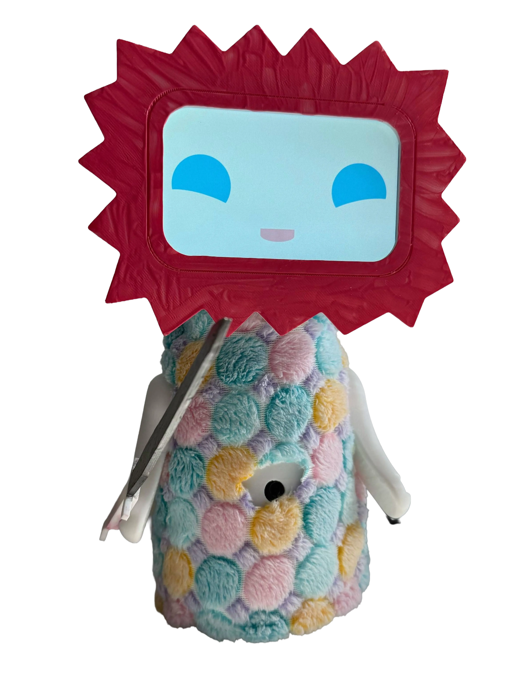
An open-source, low-cost tabletop social robot that is easier to reproduce, modify, and deploy in real-world settings.
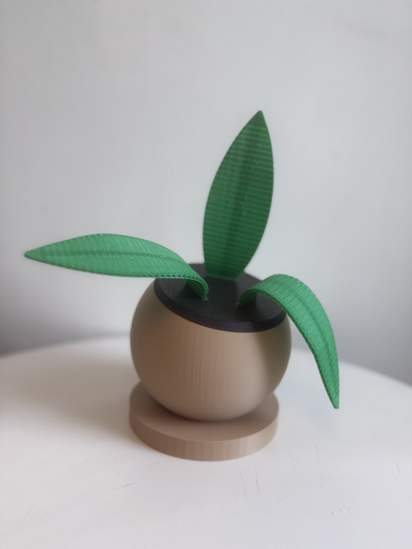
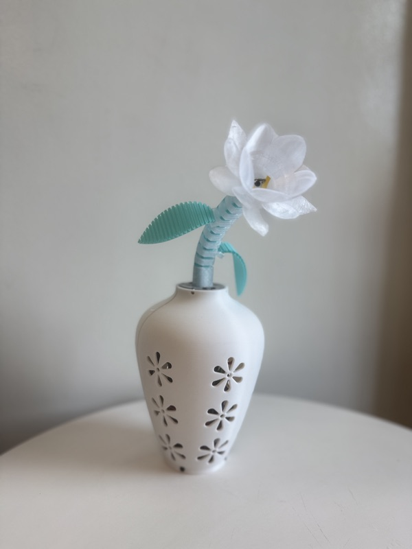
ACM/IEEE HRI ’26 Best Paper Honorable Mention
Speculative, open-source prototypes that explore plants as metaphoric inspiration for HRI.
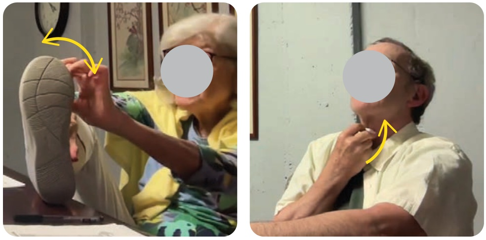
A two-phase co-design process with 13 older adults to uncover design principles for on-body robots.
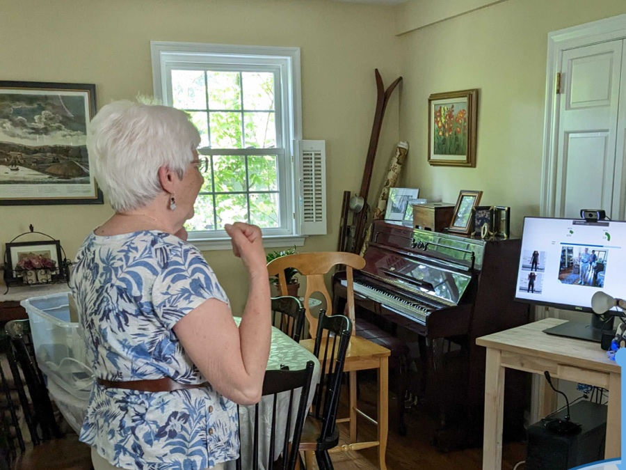
Robots to promote physical activity, co-designed by older adults, physical therapy experts, and engineers.
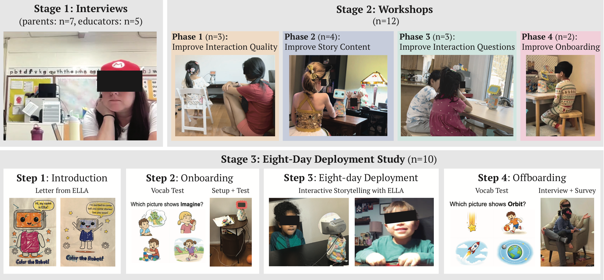
An autonomous, LLM-powered social robot that supports early language development through interactive storytelling.
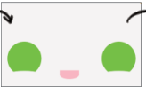
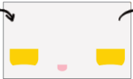
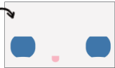
A system that uses language models to generate context-aware facial expressions for robots.
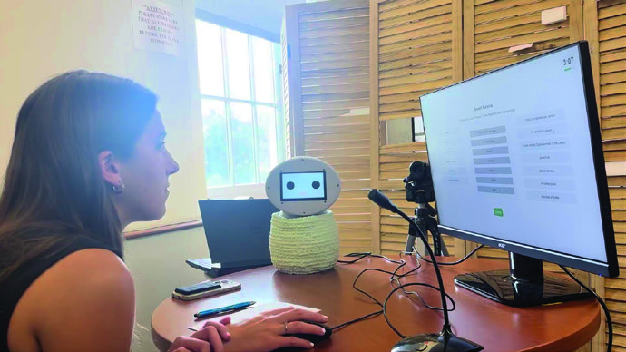
A system that detects user-initiated interruptions and manages them in real time.

ACM TiiS Highlighted Paper
An integrated authoring system for visual story creation aided by generative AI.
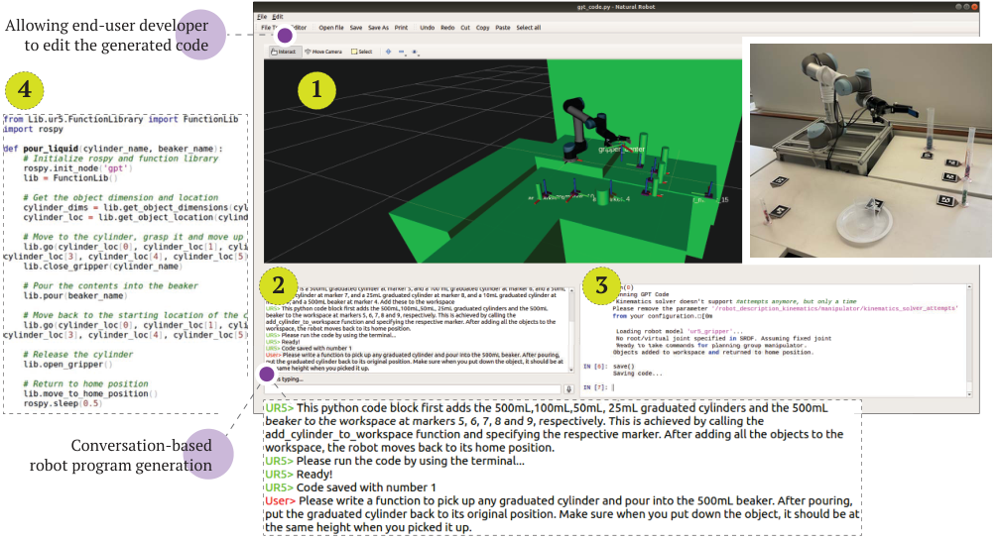
An integrated development system that uses LLMs to help end users create, test, and run robot programs in natural language.